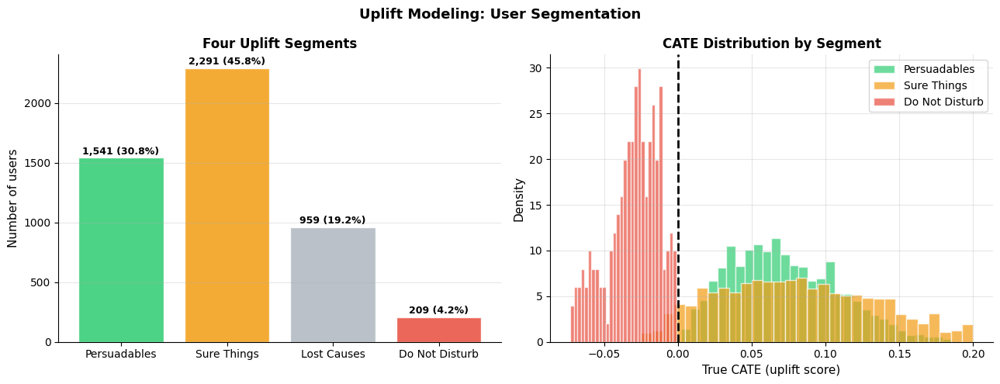
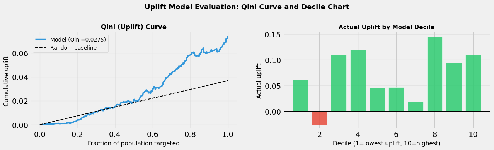

How do you do uplift modeling?#
Topics: Uplift Score · Four Segments · Uplift Curves · Qini Coefficient · CausalML Implementation
Note: This notebook uses
causalml. Install with:pip install causalml
1. Uplift Modeling Overview#
What it is#
Uplift modeling estimates the individual causal effect of a treatment
Also called: incremental modeling, true lift modeling, net lift modeling
Industry name for CATE estimation — same concept, different vocabulary
The four segments#
Segment |
Without treatment |
With treatment |
Action |
|---|---|---|---|
Persuadables |
Won’t convert |
Will convert |
TARGET — highest ROI |
Sure Things |
Will convert |
Will convert |
SKIP — waste of budget |
Lost Causes |
Won’t convert |
Won’t convert |
SKIP — no effect |
Do Not Disturb |
Will convert |
Won’t convert |
AVOID — treatment hurts |
Key intuition#
Standard churn prediction targets users most likely to churn — but some will churn regardless
Uplift modeling targets users who will RESPOND to intervention — maximum ROI
Sending a discount to a Sure Thing wastes budget — they would have converted anyway
Assumptions#
Unconfoundedness: no unmeasured confounders
Positivity: all users have a chance of being treated or not
SUTVA: treatment of one user does not affect others
Validation#
Qini curve — should be above the random baseline diagonal
Uplift by decile — top deciles should have highest actual uplift
Placebo test — apply model to pre-period data, effect should be near zero
If violated#
Unconfoundedness violated → doubly robust uplift estimator
Poor calibration → recalibrate using isotonic regression
Qini below random → wrong model, add more features, check data quality
import numpy as np
import matplotlib.pyplot as plt
from sklearn.ensemble import GradientBoostingRegressor, GradientBoostingClassifier
from sklearn.model_selection import train_test_split
np.random.seed(42)
n = 5000
# Simulate user data
age = np.random.uniform(18, 65, n)
tenure = np.random.uniform(0, 60, n)
usage = np.random.uniform(0, 100, n)
X = np.column_stack([age, tenure, usage])
# True CATE — varies by user
true_cate = 0.05 + 0.003*(age-40) + 0.002*(tenure-30) - 0.001*(usage-50)
true_cate = np.clip(true_cate, -0.15, 0.20)
# Random treatment assignment (A/B test)
T = np.random.binomial(1, 0.5, n)
# Outcome (conversion probability)
base_prob = 0.10 + 0.001*tenure - 0.0005*(age-40)
Y = np.random.binomial(1, np.clip(base_prob + true_cate*T, 0, 1), n)
# Four segments based on true CATE and base probability
# Use median as threshold since base_conv range is below 0.5 in this simulation
base_conv = np.clip(base_prob, 0, 1)
trt_conv = np.clip(base_prob + true_cate, 0, 1)
threshold = np.median(base_conv) # adaptive threshold based on data distribution
persuadable = (base_conv < threshold) & (trt_conv >= threshold)
sure_thing = (base_conv >= threshold) & (trt_conv >= threshold)
lost_cause = (base_conv < threshold) & (trt_conv < threshold)
do_not_disturb = (base_conv >= threshold) & (trt_conv < threshold)
print("User segment distribution:")
print(f" Persuadables : {persuadable.sum():,} ({persuadable.mean():.1%})")
print(f" Sure Things : {sure_thing.sum():,} ({sure_thing.mean():.1%})")
print(f" Lost Causes : {lost_cause.sum():,} ({lost_cause.mean():.1%})")
print(f" Do Not Disturb : {do_not_disturb.sum():,} ({do_not_disturb.mean():.1%})")
fig, axes = plt.subplots(1, 2, figsize=(13, 5))
# 2x2 segment matrix
segment_names = ['Persuadables', 'Sure Things', 'Lost Causes', 'Do Not Disturb']
segment_counts = [persuadable.sum(), sure_thing.sum(), lost_cause.sum(), do_not_disturb.sum()]
colors = ['#2ECC71', '#F39C12', '#AEB6BF', '#E74C3C']
axes[0].bar(segment_names, segment_counts, color=colors, alpha=0.85, edgecolor='white')
axes[0].set_ylabel('Number of users', fontsize=11)
axes[0].set_title('Four Uplift Segments', fontsize=12, fontweight='bold')
axes[0].grid(True, alpha=0.3, axis='y')
axes[0].spines['top'].set_visible(False); axes[0].spines['right'].set_visible(False)
for i, val in enumerate(segment_counts):
axes[0].text(i, val+30, f'{val:,} ({val/n:.1%})', ha='center', fontsize=9, fontweight='bold')
# CATE distribution by segment
axes[1].hist(true_cate[persuadable], bins=30, alpha=0.7, color='#2ECC71', label='Persuadables', edgecolor='white', density=True)
axes[1].hist(true_cate[sure_thing], bins=30, alpha=0.7, color='#F39C12', label='Sure Things', edgecolor='white', density=True)
axes[1].hist(true_cate[do_not_disturb], bins=30, alpha=0.7, color='#E74C3C', label='Do Not Disturb', edgecolor='white', density=True)
axes[1].axvline(0, color='black', linewidth=2, linestyle='--')
axes[1].set_xlabel('True CATE (uplift score)', fontsize=11)
axes[1].set_ylabel('Density', fontsize=11)
axes[1].set_title('CATE Distribution by Segment', fontsize=12, fontweight='bold')
axes[1].legend(fontsize=10); axes[1].grid(True, alpha=0.3)
axes[1].spines['top'].set_visible(False); axes[1].spines['right'].set_visible(False)
plt.suptitle('Uplift Modeling: User Segmentation', fontsize=13, fontweight='bold')
plt.tight_layout()
plt.savefig('uplift_segments.png', dpi=120, bbox_inches='tight')
plt.show()
User segment distribution:
Persuadables : 1,541 (30.8%)
Sure Things : 2,291 (45.8%)
Lost Causes : 959 (19.2%)
Do Not Disturb : 209 (4.2%)

2. Uplift Curves & Qini Coefficient#
What it is#
Uplift curve — rank users by predicted uplift, plot cumulative actual uplift vs fraction targeted
Qini coefficient — area between uplift curve and random baseline (like AUC for uplift)
Higher Qini = better model at identifying persuadables
Key intuition#
Random targeting: uplift grows linearly — you’re just targeting random users
Perfect model: curve rises steeply — all persuadables are in the top deciles
Your model: should be between random and perfect
Interpretation#
Top 20% by predicted uplift — what fraction of all persuadables are captured?
Qini = 0 → random model, Qini = 1 → perfect model, Qini < 0 → worse than random
Interview Q&A#
Why not just use standard classification metrics (AUC) for uplift models?
Standard AUC measures ranking of outcomes — not incremental effects
A user who converts without treatment has high outcome but zero uplift
Qini specifically measures the model’s ability to rank users by causal effect
How do you validate an uplift model in production?
Run a holdout A/B test on model predictions
Compare actual uplift in top decile vs bottom decile
Check that targeting top decile gives higher incremental conversions than random
import numpy as np
import matplotlib.pyplot as plt
from sklearn.ensemble import GradientBoostingRegressor, GradientBoostingClassifier
from sklearn.model_selection import train_test_split
np.random.seed(42)
n = 5000
age = np.random.uniform(18, 65, n)
tenure = np.random.uniform(0, 60, n)
usage = np.random.uniform(0, 100, n)
X = np.column_stack([age, tenure, usage])
true_cate = np.clip(0.05 + 0.003*(age-40) + 0.002*(tenure-30) - 0.001*(usage-50), -0.15, 0.20)
T = np.random.binomial(1, 0.5, n)
base_prob = np.clip(0.10 + 0.001*tenure - 0.0005*(age-40), 0, 1)
Y = np.random.binomial(1, np.clip(base_prob + true_cate*T, 0, 1), n)
X_tr, X_te, T_tr, T_te, Y_tr, Y_te, cate_tr, cate_te = train_test_split(
X, T, Y, true_cate, test_size=0.3, random_state=42)
# T-Learner uplift model
m0 = GradientBoostingClassifier(n_estimators=100, random_state=42)
m1 = GradientBoostingClassifier(n_estimators=100, random_state=42)
m0.fit(X_tr[T_tr==0], Y_tr[T_tr==0])
m1.fit(X_tr[T_tr==1], Y_tr[T_tr==1])
uplift_score = m1.predict_proba(X_te)[:,1] - m0.predict_proba(X_te)[:,1]
# Try CausalML if available
try:
from causalml.inference.tree import UpliftRandomForestClassifier
# treatment must be passed as string labels matching control_name
treatment_label = np.where(T_tr==1, 'treatment', 'control')
clf = UpliftRandomForestClassifier(
n_estimators=50, random_state=42, control_name='control'
)
clf.fit(X_tr, treatment=treatment_label, y=Y_tr)
causalml_score = clf.predict(X_te)[:,0]
has_causalml = True
print("CausalML UpliftRandomForest used")
except (ImportError, TypeError, Exception) as e:
causalml_score = uplift_score
has_causalml = False
print(f"CausalML not available ({type(e).__name__}) — using T-Learner scores instead")
print("Install with: pip install causalml")
def qini_curve(uplift, T, Y, n_bins=100):
df_idx = np.argsort(uplift)[::-1]
treated_sorted = T[df_idx]
outcome_sorted = Y[df_idx]
n = len(uplift)
n_t = T.sum(); n_c = (1-T).sum()
cum_t_y, cum_c_y, cum_n = 0, 0, []
qini_vals = [0]
for i, (t, y) in enumerate(zip(treated_sorted, outcome_sorted)):
if t == 1: cum_t_y += y
else: cum_c_y += y
frac = (i+1)/n
qini = cum_t_y/n_t - cum_c_y/n_c if n_t > 0 and n_c > 0 else 0
qini_vals.append(qini * frac)
cum_n.append(frac)
return [0]+cum_n, qini_vals
fracs, qini_vals = qini_curve(uplift_score, T_te, Y_te)
fracs_rand = [0, 1]
qini_coef = np.trapezoid(qini_vals, fracs)
fig, axes = plt.subplots(1, 2, figsize=(13, 4))
axes[0].plot(fracs, qini_vals, color='#3498DB', linewidth=2.5, label=f'Model (Qini={qini_coef:.4f})')
axes[0].plot([0,1], [0, np.trapezoid([0,qini_vals[-1]], [0,1])], 'k--', linewidth=1.5, label='Random baseline')
axes[0].set_xlabel('Fraction of population targeted', fontsize=11)
axes[0].set_ylabel('Cumulative uplift', fontsize=11)
axes[0].set_title('Qini (Uplift) Curve', fontsize=12, fontweight='bold')
axes[0].legend(fontsize=10); axes[0].grid(True, alpha=0.3)
axes[0].spines['top'].set_visible(False); axes[0].spines['right'].set_visible(False)
# Uplift by decile
deciles = np.percentile(uplift_score, np.arange(10, 110, 10))
decile_uplift = []
for i in range(10):
lo = np.percentile(uplift_score, i*10)
hi = np.percentile(uplift_score, (i+1)*10)
mask = (uplift_score >= lo) & (uplift_score < hi)
if mask.sum() > 0:
nt = T_te[mask].sum()
nc = (1-T_te[mask]).sum()
up = (Y_te[mask][T_te[mask]==1].mean() - Y_te[mask][T_te[mask]==0].mean()
if nt > 0 and nc > 0 else 0)
decile_uplift.append(up)
else:
decile_uplift.append(0)
colors = ['#2ECC71' if v > 0 else '#E74C3C' for v in decile_uplift]
axes[1].bar(range(1, 11), decile_uplift, color=colors, alpha=0.85, edgecolor='white')
axes[1].axhline(0, color='black', linewidth=1)
axes[1].set_xlabel('Decile (1=lowest uplift, 10=highest)', fontsize=11)
axes[1].set_ylabel('Actual uplift', fontsize=11)
axes[1].set_title('Actual Uplift by Model Decile', fontsize=11, fontweight='bold')
axes[1].grid(True, alpha=0.3, axis='y')
axes[1].spines['top'].set_visible(False); axes[1].spines['right'].set_visible(False)
plt.suptitle('Uplift Model Evaluation: Qini Curve and Decile Chart', fontsize=13, fontweight='bold')
plt.tight_layout()
plt.savefig('qini_curve.png', dpi=120, bbox_inches='tight')
plt.show()
print(f"Qini coefficient: {qini_coef:.4f}")
/opt/hostedtoolcache/Python/3.11.15/x64/lib/python3.11/site-packages/tqdm/auto.py:21: TqdmWarning: IProgress not found. Please update jupyter and ipywidgets. See https://ipywidgets.readthedocs.io/en/stable/user_install.html
from .autonotebook import tqdm as notebook_tqdm
Failed to import duecredit due to No module named 'duecredit'
CausalML UpliftRandomForest used

Qini coefficient: 0.0275
Gotchas#
Uplift score can be negative — do not disturb users should be avoided
Qini is sensitive to sample size — use bootstrap confidence intervals for small datasets
High Qini on train does not mean high Qini on test — always evaluate on held-out data
In production, targeting top X% requires deciding the budget constraint first